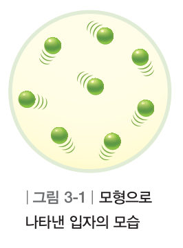
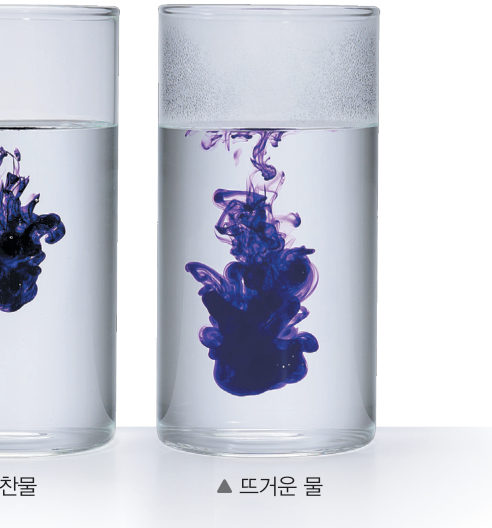
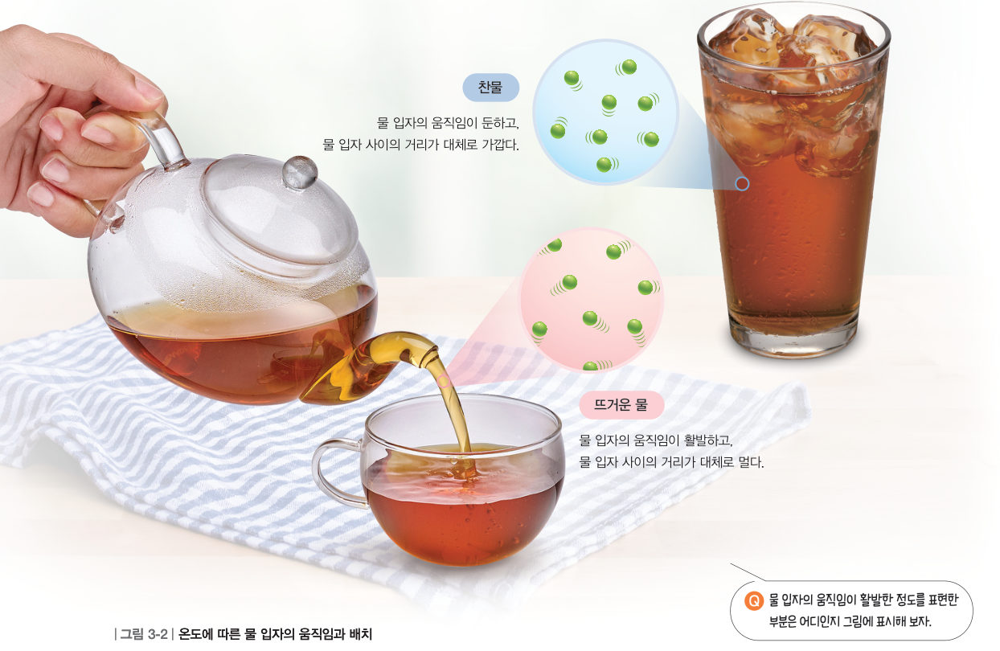

보온병이 몸을 흔들면서 "안에 뜨거운 물이 들어 있어"라고 표현한 까닭은 무엇일까? 교과서 그림과 함께 찬물과 뜨거운 물 속 입자를 직접 움직여 보며 그 답을 찾아보자.
🎯 이 단원을 배우면 — 물질의 온도 차이를 입자의 움직임과 배치로 설명할 수 있다.
교과서온도에 따라 입자의 움직임이나 배치는 어떻게 다를까? 84쪽

그림 3-1모형으로 나타낸 입자의 모습
우리 주변의 물질은 매우 작은 입자로 구성되어 있으며 입자는 끊임없이 움직인다. 물질을 구성하는 입자는 직접 관찰하기 어려우므로 그림 3-1과 같이 간단한 모형으로 나타낸다. 다음 활동으로 온도에 따라 입자의 움직임이 어떻게 달라지는지 생각해 보자.
🔗 연결 입자의 움직임으로 나타나는 현상은 116쪽(Ⅳ. 물질의 상태 변화)에서 더 알아볼 수 있다.
1입자는 크기가 매우 작아서 직접 관찰하기 어려우므로 간단한 을 사용하여 입자를 표현한다.
해 보기온도에 따른 입자의 움직임 차이 알아보기 84쪽

교과서 사진찬물(왼쪽)과 뜨거운 물(오른쪽)에 잉크를 동시에 넣었을 때
찬물과 뜨거운 물 중 잉크는 어디에서 더 빨리 퍼지는가?
아래 실험대에서 두 비커의 물 온도를 정하고 [잉크 떨어뜨리기]를 눌러 보자. 잉크 입자(보라색)가 주변 물 입자와 부딪히며 퍼지는 모습을 비교할 수 있다. 퍼진 정도는 잉크가 처음 위치에서 평균적으로 얼마나 멀리 퍼졌는지를 나타낸다.
경과 시간0.0 s
왼쪽 퍼진 정도0
오른쪽 퍼진 정도0
1잉크는 에서 더 빨리 퍼진다. 그 까닭은 뜨거운 물에서 물 입자의 움직임이 더 때문이다.
2잉크가 퍼지는 모습으로 보아 찬물과 뜨거운 물에서 물 입자의 움직임이 각각 어떻게 다를지 이야기해 보자.
3D 시뮬레이션입자 상자 속으로 들어가 보기
물질을 구성하는 입자를 3D 모형으로 나타냈다. 두 상자의 온도를 바꾸고 화면을 드래그해 여러 방향에서 관찰해 보자. 입자 뒤에 남는 꼬리는 입자가 움직인 길(자취)이다. 오른쪽 계기판에서 입자의 평균 속력과 입자 사이의 평균 거리를 비교하자. (입자 사이 거리의 변화는 눈에 잘 보이도록 과장했다.)
입자 모형 3D · 드래그하여 돌리기
🔵 평균 속력(상대값)-
🔵 입자 사이 평균 거리-
🔴 평균 속력(상대값)-
🔴 입자 사이 평균 거리-
1온도가 높은 상자일수록 입자의 평균 속력이 , 입자 사이의 거리가 대체로 .
2그림은 같은 물질을 이루는 입자의 배치와 움직임이다. 온도가 가장 높은 것은 , 입자의 움직임이 가장 둔한 것은 이다.
교과서온도는 입자의 움직임이 활발한 정도를 나타낸다 85쪽
물질을 구성하는 입자는 온도가 높을수록 움직임이 활발하다. 찬물보다 뜨거운 물에서 물 입자가 더 활발하게 움직이므로 찬물보다 뜨거운 물에서 잉크가 더 빨리 퍼진다. 따라서 온도는 물질의 차갑고 따뜻한 정도를 나타낼 뿐만 아니라 물질을 구성하는 입자의 움직임이 활발한 정도를 나타낸다. 온도의 단위는 ℃(섭씨도)나 K(켈빈) 등을 사용한다.
물질을 구성하는 입자의 움직임이 활발할수록 입자 사이의 거리가 대체로 멀어지면서 입자의 배치가 달라진다. 그림 3-2와 같이 찬물보다 뜨거운 물에서 물 입자의 움직임이 더 활발하므로 물 입자 사이의 거리도 대체로 더 멀다.

그림 3-2온도에 따른 물 입자의 움직임과 배치 · 그림을 누르면 크게 볼 수 있어요
1그림 3-2에서 물 입자의 움직임이 활발한 정도를 표현한 부분은 이다.
2온도의 단위에는 ℃(섭씨도)와 등이 있다.
스스로 확인하기84쪽 학습 목표를 달성했는지 확인해 보자 85쪽
1개념 확인 물질을 구성하는 입자는 온도가 ( ) 움직임이 활발하다.
2옳으면 ○, 옳지 않으면 ×를 고르시오.
3설탕은 에서 더 잘 녹는다.
4사고력 미지근한 물은 뜨거운 물, 찬물과 비교하여 입자의 움직임과 배치가 어떻게 다른지 설명해 보자. (3D 상자에서 온도를 50 ℃ 정도로 맞추어 관찰해 봐요.)
스스로 정리하기온도와 입자 94쪽
1온도와 입자
(1) 은/는 물질의 차갑고 따뜻한 정도를 나타내며, 물질을 구성하는 입자의 움직임이 활발한 정도를 나타낸다.
(2) 온도에 따른 입자의 움직임과 배치
온도가 물질
온도가 물질
입자의 움직임: 활발하다. 입자 사이의 거리: 대체로 멀다.
입자의 움직임: 둔하다. 입자 사이의 거리: 대체로 가깝다.
제출학생 정보 · 제출하기
모든 활동을 마친 뒤 제출하면 전체가 한 번에 채점되고 피드백이 나타나요. 답안은 선생님 스프레드시트(중1 탭)에 기록돼요.